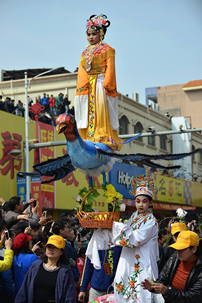
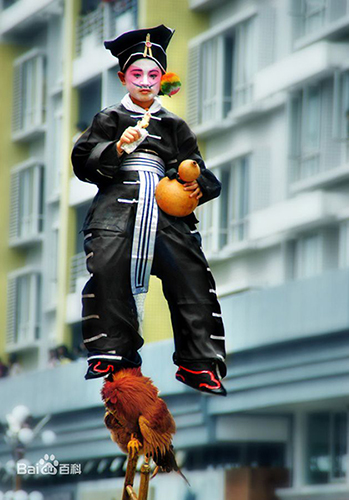
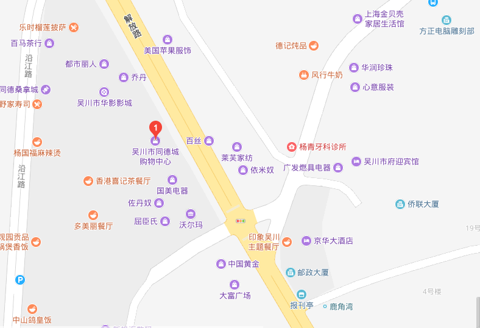

吴川飘色艺术是广东省吴川市的传统民俗文化活动。由若干人推着一座色板，色板上装饰着固定姿势的人物。人物只靠一根看不见的色梗支撑着，在高可逾人的空中手舞足蹈，飘然欲飞故而叫飘色。属于社火表演艺术形式之一。
|  | 历史追溯 广东吴川市黄坡镇的民间艺人陈寿全生前回忆：清末，吴川黄坡的四乡八村常常举行游神赛会，出现了表现戏剧片断的化装游行，俗称地色，引人注目。 为取胜其他村庄,他与乃父别出心裁地搞了技巧化装游人，在一个扁方形的木箱上，设计出《哪叱出世》戏剧片断：一个身穿红绫兜，手执红缨枪的小孩，立在可以开合莲花上。因为莲花是向上翘起的，所以称作翘色。小哪叱在莲花上迎风飞飘,故又称为飘色。这套飘色展出后，游遍黄坡，轰动全县。人们都觉得很奇怪，一根手指般大的花梗上开着花朵，怎么能站立个小孩？后来，陈寿全又相继制作了二十板飘色，在各地展出，大受民众欢迎。 从此，飘色之花就遍开在吴川的沃土之上。 |
| 历史发展 素有民间艺术之乡美誉的吴川民间艺术以其历史悠久、丰富多彩、技艺精湛而闻名遐迩. 尤其是始于清代的吴川飘色，堪称南国民间艺术的一株绚丽的奇葩。 特别奇妙的是，在空中飘动的人物的立足点只是踩着一根缨枪或剑尾上；更有趣的是，有的角色还踏着活生生的动物（如公鸡、白鸽、鲤鱼、金鱼等）在行进间手舞足蹈，给予人们一种神秘感。 飘色的人物形象普遍是按戏剧人物的艺术造型设计、打扮的。 其内容有历史故事，或神话传说，或现代题材。 一板飘色往往就象一座流动的小舞台表现着一出精彩的特写镜头。现时飘色一般由2至6岁左右的儿童上板乔装打扮，并由过去的一板一层飘色发展到如今的的一板两层或三层飘色。 造型艺术已由过去的单一的木工铁工技巧发展到现代已集电影、戏剧、魔术、杂技等技艺之大成的综合性的空飘造型。人们通过观看五花八门的飘色，将得到一种无法形容的艺术享受。 |  |
